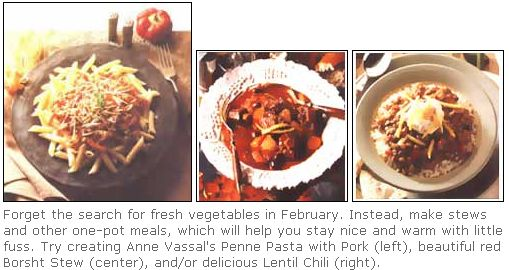
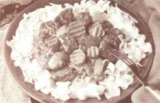

NATURAL HEALTH
Don't get stuck with cabin fever, make simple recipes that'll allow you to get out.
This is the time of year when cabin fever manifests itself in epidemic proportions in the Midwest. We spend a good portion of our day within those four walls at work, only to return home to another set of all too familiar walls. The sky is an eternal gray mass, the weather's nasty, and the only fresh thing in the refrigerator is the mold on the oranges. We may choose to wallow in misery under the covers watching old westerns, or defy the weather and break out of the house. But in order to go tobogganing, bargain hunting, or museum hopping, we must have something hot and appealing on the stove to welcome our return home, and it had better be simple or we'll never escape those four walls.
I never knew the true meaning of cabin fever until we lived on a farm in the Upper Peninsula of Michigan. I was often snowed in for four to five days at a time with an 18month old baby and my husband away on business. My only social interaction consisted of babbling broken English with a toddler and chatty monologues delivered to two old horses over the feed trough. When I finally did get to the nearest town five miles away, food selection was limited at the solitary grocery store. At that time of year, the only fresh vegetable available was soggy gray-green celery. I was pressured into culinary creativity-using soggy celery, a cellar full of root vegetables, and whatever was in the deep freeze. Amazingly enough, some terrific smelling stews and chili were conceived on the woodburning cook stove. The stove warmed the kitchen while the stews warmed our innards. I learned that winter that our bodies are adaptive to seasonal eating. We aren't going to suffer nutritionally after a winter of consuming root vegetables.
The recipes below use winter vegetables that are readily available and affordable. They require a minimum of both preparation and cleanup (note: using a food processor will speed things up considerably).
This stew is a beautiful red color and I've found it is the only way my family will eat beets. Traditional borscht has sliced cabbage in it. If you wish to add some to this recipe, just omit the celery. Borscht can be made without meat, but I cut some some beef into small pieces and throw that in for flavor to 1 pound beef stew meat, cut into small pieces
•1/4 cup flour, whole wheat or white
•1 tablespoon olive oil
•4 cloves garlic, minced
• 5 cups water
•2 medium onions, cut into bite-size chunks
•4 to 5 carrots (2 1/2 cups), cut into half-inch chunks
•4 to 5 small white or red potatoes (2 cups), cut into chunks
•3 turnips, quartered and sliced thin
•4 to 5 beets (4 cups)
•3 stalks celery (1 1/2 cups), cut into half-inch chunks
•1/2 cup tomato paste
•3 tablespoons cider vinegar
•1 tablespoon honey
•1 tablespoon brown sugar
•1 teaspoon dried basil
•1 teaspoon ground paprika teaspoon ground cayenne pepper salt and freshly ground pepper
Optional: chopped parsley, low-fat yogurt, or "lite" sour cream
Put meat chunks and flour in plastic bag and shake in order to coat meat. Heat the oil on medium-high in a large stew pot; add meat. Brown for two to three minutes, but don't let burn. Add garlic and saute for a minute or so. De-glaze the pan with the five cups of water. Cover and simmer on low for 30 minutes.
Add remaining ingredients (except celery) and cook for 30 more minutes. Then add celery and simmer for another 30 minutes or so until vegetables are just done, stirring as needed. Add salt, pepper, and additional water.
Serve stew topped with a combination of low-fat yogurt, "lite" sour cream, and chopped parsley.
There's nothing better than coming home after a full day of sledding, and having a nice warm meal to welcome you back.
To cut down on fat, I use pork instead of the conventional Italian sausage. To guarantee that the ground pork I use isn't fatty, I buy pork stew meat, freeze it slightly, and then grind it in the food processor.
•3/4 cup ground pork
•1 teaspoon olive oil
•2 large cloves garlic, minced
•1 large onion, chopped
•2 cups celery,
•chopped 1/2 cup red pepper, chopped into thin strips, then chopped in half
•1/2 teaspoon cayenne pepper
• 1/2 teaspoon oregano
•1 1/2 teaspoon basil teaspoon fennel seed
• 16 ounces canned tomatoes with juice
•4 tablespoons tomato paste
•1 teaspoon red wine vinegar salt and freshly ground pepper
•4 cups uncooked penne pasta grated parmesan or romano cheese chopped parsley
Fry pork in olive oil in a non-stick skillet until browned. Add garlic and onion; saute for a few minutes. Add celery, red pepper, spices, tomatoes, tomato paste, and vinegar. Cook uncovered on medium heat for 10 to 15 minutes. Meanwhile, boil water for the pasta and then cook it until done, but not mushy. Drain the pasta well and stir into the meat mixture. Top this meal with parmesan cheese and sprigs of parsley.
This vegetarian chili is faster to prepare than standard chili because lentils cook quickly. Since lentils are a drab color, top this dish with some grated cheddar cheese, red or green onions, and fresh cilantro or parsley.
•4 cloves garlic, minced
•2 medium onions, chopped
•1 small jalapeno or cayenne pepper, minced
•1 tablespoon olive oil
•3 cups brown lentils
•6 cups water
•2 teaspoons ground cumin
•1 teaspoon ground coriander
•2 teaspoons chili powder
•1 teaspoon paprika
•1/2 teaspoon allspice
•1/2 teaspoon thyme
•3/4 cup tomato paste
•1 small can V-8 or tomato juice
•2 tablespoons red wine vinegar
•1 teaspoon sugar
•1 large red pepper, chopped
•2 stalks celery, chopped
•Toppings: sour cream, grated cheese, red or green onion, cilantro or parsley.
Saute garlic, onion, and hot pepper in oil. Add lentils, water and spices. Simmer for 25 to 30 minutes in a covered pot until the lentils are tender. Add tomato paste, juice, vinegar, sugar, red pepper, and celery. Add salt, pepper and additional water if needed. Simmer for another 15 to 20 minutes until vegetables are tender. Serve plain or over brown rice or pasta.
My Turkish stepfather's says the same thing everytime he cooks: "Lots of garlic and olive oil-it will be fantastic." And it is, but I've cut down on both here-you can add more if you wish.
•2 tablespoons olive oil
•2 medium onions, cut into bite-size chunks
•1 teaspoon ground cumin
• 1 teaspoon paprika
•1/4teaspoon each: ground allspice, cardamon, ginger, cinnamon
•1/2 teaspoon garam masala* (optional)
•5 cloves garlic, minced
•1 pound lamb, cut into bite-size chunks, trimming all fat
•1 small jalapeno pepper, minced, seeds removed
•3 cups water
•1 tablespoon tomato paste
•1 teaspoon tamari (mild soy sauce)
•1 tablespoon brown sugar
•2 bay leaves
•5 small carrots, cut into half- inch chunks
•1/ 2 pound green beans, cut into 1 inch pieces
•1 to 2 skinned tomatoes, chopped into ;inch chunks
•salt and freshly ground pepper
•* Can be purchased at an Asian or Indian grocery store.
Heat one tablespoon of olive oil in large pot. Saute onion and spices until almost all of the oil disappears. Add second tablespoon of oil. Then add lamb, garlic, and hot pepper. Saute, stirring constantly, until lamb releases its moisture and reabsorbs it. Pour in water, cover; simmer. After 30 minutes, add tomato paste, tamari, sugar, bay leaves, and carrots. Let simmer. After 20 minutes, add green beans and tomatoes. Simmer. After 10 minutes (or when cooked), add salt and pepper. Serve over noodles or mashed potatoes. Top with fresh parsley.
|
 |
 |
|